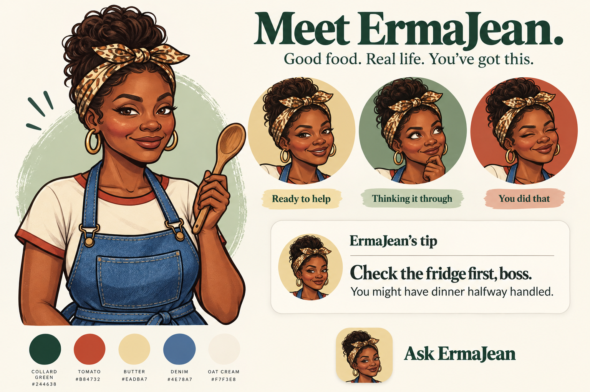
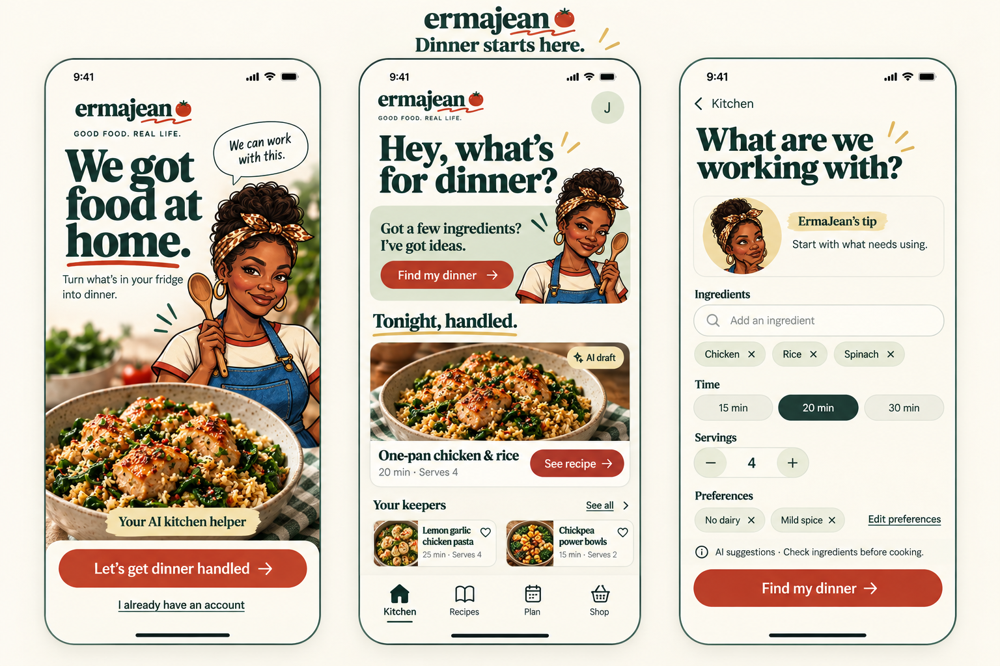
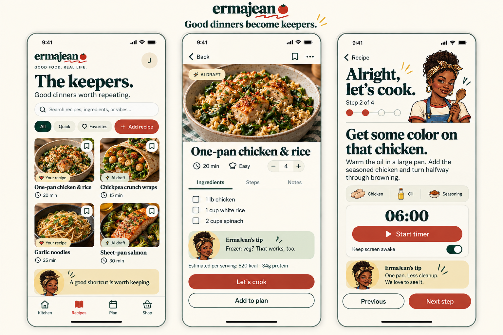
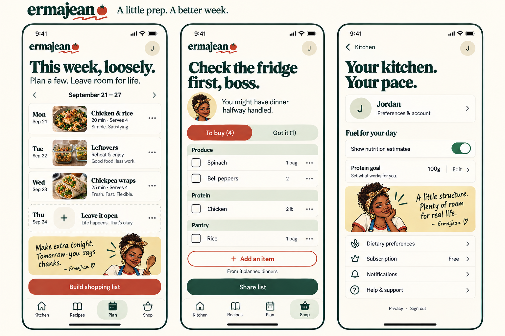
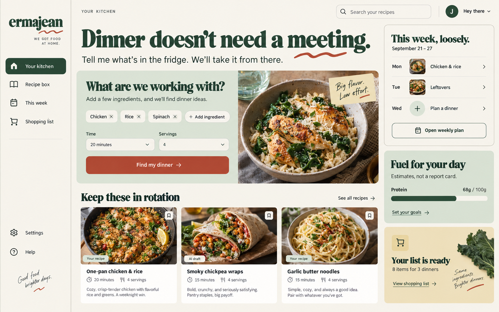
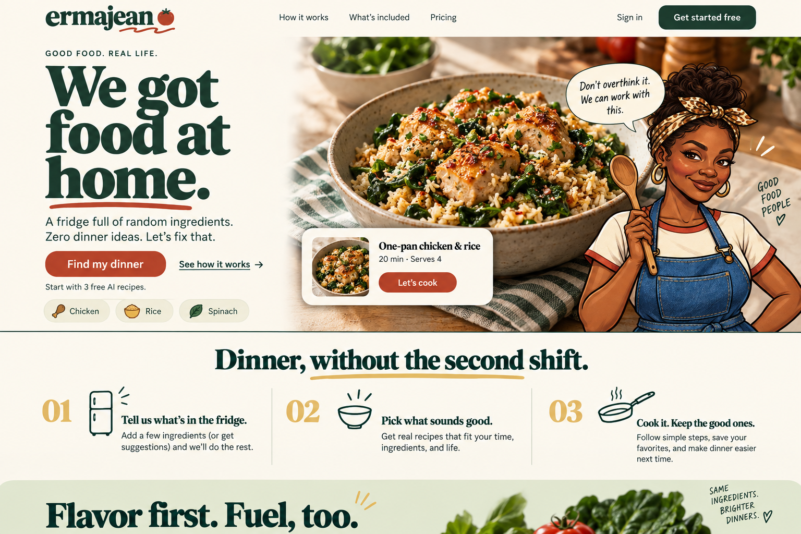

Meet ErmaJean.
Developed from your reference: the scarf, hoops, denim apron, wooden spoon, and knowing smile. She belongs beside helpful guidance, while your account remains a separate user profile.

Character concept, not final cut-out production assets. Small-size portraits need a dedicated simplification pass.
Dinner starts here.
Welcome, Kitchen and ingredient entry. ErmaJean brings the website’s personality into native mobile flows.

Good dinners become keepers.
Recipe box, recipe detail and cooking mode. Clear actions, practical tips and vivid food photography.

A little prep. A better week.
Flexible meal planning, shopping and optional nutrition goals, with a clearly separate user profile.

A kitchen that uses the whole screen.
Desktop brings ingredients, repeat favorites and a loose weekly plan together. Nutrition stays optional and clearly labeled as an estimate.

The public promise.
A direct introduction to the brand, with ErmaJean's personality and the food sharing the stage.

What gets updated first.
- Protect AI spending, private session data, mail routing and database authorization.
- Restore reliable builds and release checks; update vulnerable dependencies deliberately.
- Repair generation, recovery, subscription tiers, sharing, servings and shopping logic.
- Ship the new dinner flow and avatar system, then planning, shopping and public marketing.
These are generated visual concepts and an implementation plan, not changes to the live product. The written specification records image inconsistencies, illustrative recipe content, accessibility requirements and all missing states.
Audit limits: authenticated production journeys, deployed database policies, Stripe operations, native performance and store readiness require further verification. See the audit for exact evidence.